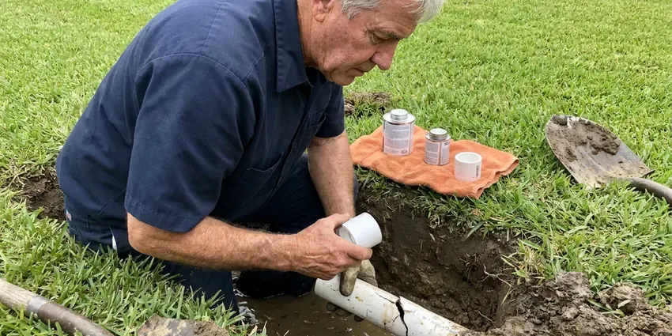

Emergency Plumber in Parkersburg, WV
Burst pipe, sewer backup or no hot water in Parkersburg, WV? GJK Plumbing sends a licensed emergency plumber to you day or night.
- Licensed, Insured Plumbers
- Upfront Pricing
- Fully Stocked Service Trucks
- Licensed West Virginia Plumbers

Urgent Plumbing Help Available 24/7 in Parkersburg, WV.
Our experienced team is on standby to handle your urgent plumbing needs, day or night.
Your Trusted Emergency Plumber in Parkersburg, WV
GJK Plumbing keeps emergency trucks stocked with copper, PEX, ABS, valves, water heater parts and drain machines. That lets our plumbers make a permanent repair on the spot in most situations instead of leaving you with a temporary patch.
Our expertise includes:
- Sewer line clogs and backups
- Advanced drain clearing for severe blockages.
- Main line backups cleared with cable machines and hydrojetters

Additional Plumbing Maintenance Services in Parkersburg, WV
Our maintenance and specialty plumbing services in Parkersburg, WV catch small problems before they become emergencies.


Customers
Why Choose GJK Plumbing for Emergency Plumber in Parkersburg, WV?
A plumbing emergency rarely waits for business hours, and a delay can turn a small repair into thousands of dollars in water damage. We answer the phone live and dispatch quickly.
- Advanced Tools, We use modern diagnostic tools like video inspection cameras and leak detection equipment for precise problem identification.
- Live Answering, A real person answers your call and helps you turn off water while we are en route.
- Honest Pricing, You get the emergency rate and repair price before any work starts.
Citywide Coverage
Our rapid response team covers the entire Parkersburg area, providing peace of mind to homeowners facing urgent plumbing situations. We're familiar with the varied housing styles and their plumbing systems across Parkersburg.
Experienced Team
Every plumber on our emergency rotation has years of service work behind them. They can diagnose a slab leak, a failed pressure regulator or a collapsed sewer line on the first visit.
Safety-First Approach
GJK Plumbing takes every precaution to protect your home and family during emergency repairs. Our team follows strict safety procedures, using proper personal protective equipment and securing the work area to prevent further issues.
Trusted Certified Parkersburg Plumbing Services Professionals
At GJK Plumbing, we take pride in providing certified plumbing services throughout Parkersburg, WV. Backed by recognized industry credentials, our experienced plumbers combine technical skill with genuine customer care. Whether it is repair, installation, or maintenance, we follow strict safety and quality standards to deliver long-lasting results you can trust.
Call Us Now PHCC Plumbing Contractor Recognition
PHCC Plumbing Contractor Recognition Better Business Bureau (BBB) Accreditation
Better Business Bureau (BBB) Accreditation Angi Certified Pro
Angi Certified Pro ISO 9001 Quality Management Certification
ISO 9001 Quality Management CertificationTrusted Emergency Plumber Services in Parkersburg, WV
Sump Pump Failure Repair in Parkersburg, WV
Flash flooding is a serious risk in West Virginia, where heavy rain moves quickly down steep slopes into narrow valleys and creeks. A failing sump pump can rapidly lead to basement flooding during heavy rain. Our emergency plumbers in Parkersburg diagnose issues such as clogged impellers, motor failures or float switch malfunctions. We can repair existing pumps or install new, more powerful units from brands like Zoeller or Wayne to prevent water damage and protect your foundation from hydrostatic pressure.

Cost of Emergency Plumbing in Parkersburg, WV
The cost of emergency plumbing in Parkersburg, WV varies based on the complexity and urgency of the issue. Simple fixes like a minor drain clog might range from $150 to $350, while a burst pipe requiring extensive repair could be $500 to $1500 or more, especially if it involves wall demolition. We provide transparent, upfront pricing after assessing the problem, with no hidden fees for after-hours service.
Overflowing Toilets and Fixture Emergencies in Parkersburg
A toilet that overflows repeatedly or a faucet that will not shut off can flood a bathroom fast. We clear the clog, replace failed fill valves, flappers or cartridges and check the supply stop. If the fixture shutoff is seized, which is common with older multi-turn valves, we replace it with a quarter-turn stop. That gives you dependable control next time.
Commercial Emergency Plumbing in Parkersburg, WV
For businesses in Parkersburg, a plumbing emergency can halt operations and lead to lost revenue. Our commercial emergency plumbing services are designed for rapid response to minimize downtime. We handle everything from main sewer line backups to commercial water heater failures and overflowing restrooms. Our team understands the unique demands of commercial plumbing systems and works quickly to get your business back up and running, in line with health and safety regulations.
Burst Pipe Repair in Parkersburg
Pipes can burst during sudden freezes or because of aging pipe and foundation shifts. Our emergency plumbers quickly locate the burst section, often using non-invasive leak detection, and perform precise repairs or replacements. We typically use PEX or copper piping, depending on the existing system and client preference, ensuring a durable, leak-free connection. Immediate action is critical to minimize water damage and mold growth. Humid summers and cold, snowy winters at higher elevations put West Virginia plumbing through a wide range of conditions each year.
Water Heater Emergencies in Parkersburg
A leaking or non-functional water heater can be a major inconvenience and a source of water damage. Whether it's a gas leak, a ruptured tank or a pilot light issue, our emergency plumbers are trained to service all major brands including Rheem, Bradford White and A. O. Smith. We can often perform emergency repairs, or if replacement is necessary, we can provide temporary solutions and schedule a quick installation of a new unit, so your Parkersburg home has hot water again soon.
Slab Leak Detection & Repair in Parkersburg, WV
Slab leaks can cause serious structural damage and high water bills. Shale and clay soils can hold water and shift over time, which can crack sewer lines and push water into basements. Our emergency team uses acoustic leak detection and thermal imaging to pinpoint the exact spot of the leak under your Parkersburg home's foundation. We then provide options for repair, which may include direct slab penetration, re-routing or epoxy pipe lining, always following local building codes for a lasting solution.

Gas Line Emergency Services in Parkersburg
A gas leak is an very dangerous emergency that requires immediate professional attention. If you smell gas, evacuate and call us right away. Our certified plumbers are equipped to detect gas leaks using specialized equipment, shut off the supply and perform compliant repairs or replacements according to state and local gas codes. We ensure your gas lines are safe and secure before restoring service.
Emergency Plumber Near Me in Parkersburg, WV
Our local presence means we understand the particular plumbing infrastructure and common issues affecting homes in Parkersburg, WV. We are equipped to handle any crisis, providing rapid relief and lasting solutions right in your neighborhood.
When you search for 'emergency plumber near me' in Parkersburg, you need a local company that responds quickly and efficiently. GJK Plumbing has dispatch teams ready across the area, so a skilled technician is never far from your home.
GJK Plumbing at a Glance
- Fully licensed plumbing team covering Parkersburg, WV
- 24/7 emergency service with same-day scheduling
- Clear written estimates, no hidden fees
- 4.8-star rated by 832+ West Virginia customers
Parkersburg Map
Parkersburg Information
- Population
- 29,025
- Area codes
- 304/681/740
- Service area
- Parkersburg and communities within 40 miles
- Nearby
- Vienna, New Martinsville, Cross Lanes, Teays Valley
Shifting soil, sudden cold snaps and summer heat can all stress pipes, so fast emergency plumbing service is essential for protecting homes in Parkersburg, WV from foundation damage, burst pipes and slab leaks. Shale and clay soils can hold water and shift over time, which can crack sewer lines and push water into basements.
Expert Services
Trust our professionals for reliable GJK Plumbing solutions in Parkersburg, WV.
Our Specialized Plumbing Services in Parkersburg, WV
At GJK Plumbing, we provide a complete range of plumbing services across Parkersburg, WV. From leak detection to full system installations, our team ensures fast, precise, and affordable service for both residential and commercial properties. Explore our core services below:


How Our Emergency Plumber Service Works in Parkersburg, WV
Our emergency plumbing process is designed for speed, clarity and effectiveness, getting your home back to normal fast.
Request a Quote
Call (681) 223-3607 any time and a live dispatcher will help you shut off water or gas. We confirm the emergency rate and send the nearest plumber.
Stop the Damage
Our plumber makes the situation safe, stops the leak or backup and evaluates the cause. You get a written repair price before work starts.
Repair and Test
We complete the repair with parts from our truck and test the system under normal use. Then we review the work with you and clean up.
Frequently Asked Questions About Emergency Plumber in Parkersburg
Emergency plumbing costs in Parkersburg, WV can vary widely based on the complexity and time of day. Simple repairs like a minor leak might range from $200 to $400, while more extensive issues like a burst main pipe or sewer line backup could be $500 to $1500 or more. We always provide upfront pricing before any work begins.
Yes. We can isolate the leak to stop the water and often restore some service the same visit. A permanent repair or reroute may be scheduled for the next day if it needs more time.
We aim to reach most homes within one to two hours, depending on time of day and demand. During widespread events like freezes or major storms, we prioritize active leaks and sewage backups. Our dispatcher gives you a honest arrival window.
Our goal for emergency calls in Parkersburg, WV is to arrive as quickly as possible, usually within 60 to 90 minutes, depending on traffic and current call volume. We understand the urgency and prioritize emergency dispatches to minimize damage to your property.
We service Rheem, A.O. Smith, Bradford White, State, Rinnai, Navien and most other major brands. Our trucks carry common valves, elements and thermocouples. If a replacement is needed, we can usually install one the same day.
Yes, emergency repairs carry the same written workmanship warranty as scheduled work. Parts include manufacturer warranties. We do not cut corners just because it is after hours.
Shutting off water and plunging a toilet are sensible first steps. Cutting pipe, working on gas lines or opening a water heater can make things worse or unsafe. Our dispatcher can walk you through safe actions while we are on the way.
If you smell gas, do not use any electrical switches or open flames. Immediately, evacuate everyone from the building, call your gas company and then call GJK Plumbing at (681) 223-3607 for emergency gas line inspection and repair. Do not re-enter until declared safe by professionals.
What People Are Saying About Our Plumbing Experts?

Robert G.
The trenchless sewer replacement saved our front yard. They walked us through the camera inspection footage first so we knew exactly what we were paying for.
Sewer Line Replacement · Teays Valley, WVJames P.
Our commercial plumbing system had a leak under the sink, and GJK Plumbing handled it professionally. The plumbers arrived quickly and restored everything without disruption to our customers.
Commercial Plumbing · Vienna, WV
Emily R.
I called GJK Plumbing for plumbing repair, and the technician was fast, polite, and thorough. They explained the problem clearly and fixed it the same day. I will definitely hire them again. Highly recommended!
Plumbing Repair · Dunbar, WV
Laura S.
I scheduled a water heater replacement, and the team made the process smooth and affordable. The new unit works perfectly, and they cleaned up after completing the job.
Water Heater Replacement · Teays Valley, WV
Daniel K.
A pipe burst at 11 pm and they actually answered. The plumber showed up within the hour, shut everything down, and had us back to normal the next morning. Could not ask for more.
Emergency Plumbing · Vienna, WVSofia M.
Two new toilets installed in one visit, no mess left behind, and the tech even adjusted a faucet he noticed was dripping. Fair pricing and really friendly.
Toilet Installation · Dunbar, WV